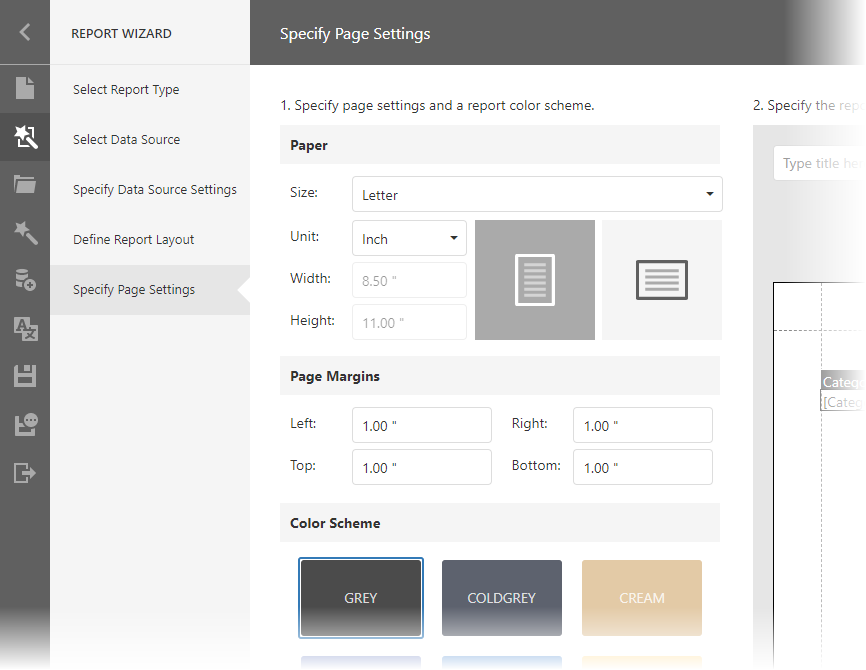
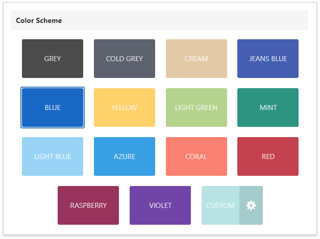
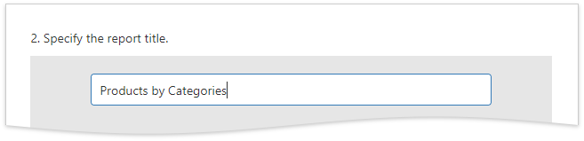
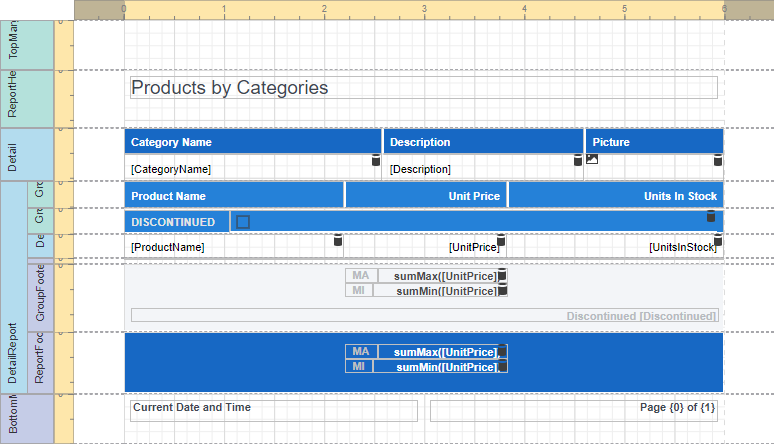
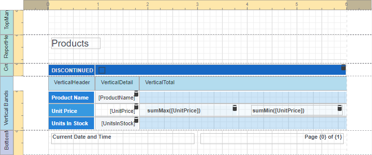

Specify Page Settings
This wizard page allows you to setup the report's page.
Specify Page Settings

You can specify the following report properties:
- Size
Unit
Choose between Inch, Millimeter and Pixel to specify size options at this step. After you finish the wizard, the Report Designer transforms the specified units to HundredthsOfAnInch, TenthsOfAMillimeter or Pixels.Width and Height
These properties are read-only until you set the Size option to Custom.
Page Margins
Orientation
The wizard's right-hand side shows the page preview based on the specified settings.
After you complete the wizard, you can change these settings in the Report Designer's Properties Panel.
Specify a Report Color Scheme
Choose the report's color scheme. The wizard creates report styles based on the selected color for the first-level report controls and applies styles with more transparent colors to controls at deeper levels.

Specify the Report Title
Click the placeholder and enter the report title.

Result
The following images show the resulting report layout:

